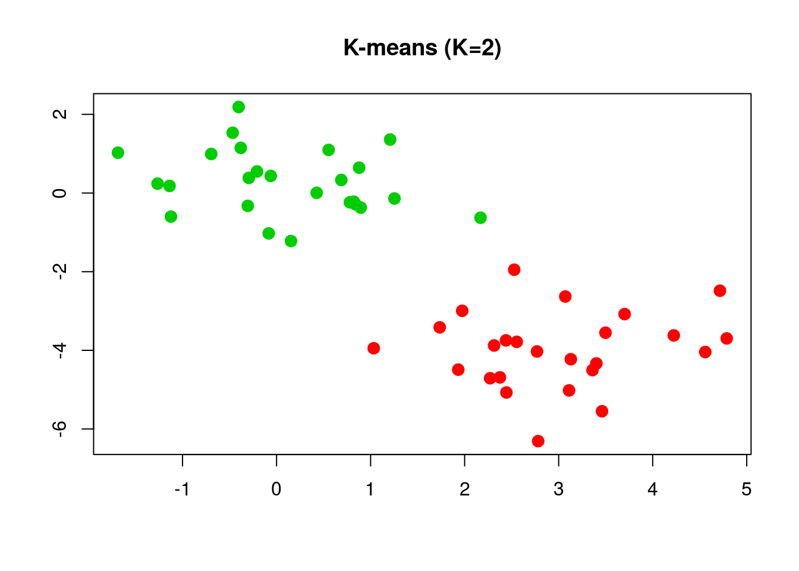
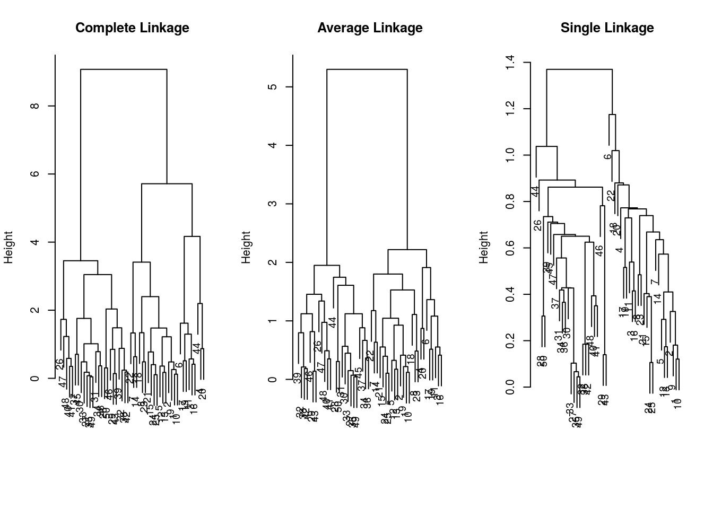
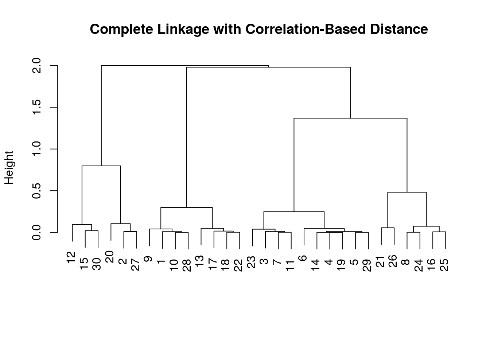

通过一个简单的例子来说明用 kmeans() 进行 \(K\)-means 聚类。
set.seed(123)
x = matrix(rnorm(50*2), ncol=2)
x[1:25, 1] = x[1:25, 1] + 3
x[1:25, 2] = x[1:25, 2] - 4然后进行 \(K\)-means 聚类，
km.out = kmeans(x, 2, nstart = 20)
plot(x, col = (km.out$cluster+1), main = "K-means (K=2)", xlab = "", ylab = "", pch = 20, cex = 2)
其中 nstart 表示随机初始划分的个数。可以比较下 \(K=3\) 时 nstart = 1 和 nstart = 20 的差异
set.seed(1234)
km.out = kmeans(x, 3, nstart = 1)
km.out$tot.withinss## [1] 64.24859km.out = kmeans(x, 3, nstart = 20)
km.out$tot.withinss## [1] 62.43309可以采用不同的 linkage 进行 系统聚类 (Hierarchical Clustering)
hc.complete = hclust(dist(x), method = "complete")
hc.average = hclust(dist(x), method = "average")
hc.single = hclust(dist(x), method = "single")并且作出 dendrograms.
par(mfrow=c(1,3))
plot(hc.complete, main = "Complete Linkage", xlab = "", sub = "", cex=.9)
plot(hc.average, main = "Average Linkage", xlab = "", sub = "", cex=.9)
plot(hc.single, main = "Single Linkage", xlab = "", sub = "", cex=.9)
为了确定分类结果，可以用 cutree() 返回类别标签，
cutree(hc.complete, 2)## [1] 1 1 1 1 1 1 1 1 1 1 1 1 1 1 1 1 1 1 1 1 1 1 1 1 1 2 2 2 2 2 2 2 2 2 2
## [36] 2 2 2 2 2 2 2 2 1 2 2 2 2 2 2当使用基于相关系数的距离度量时，可以采用 as.dist() 函数，比如
x = matrix(rnorm(30*3), ncol = 3)
dd = as.dist(1-cor(t(x)))
plot(hclust(dd, method="complete"), main = "Complete Linkage with Correlation-Based Distance", xlab = "", sub = "")
Copyright © 2016-2019 weiya